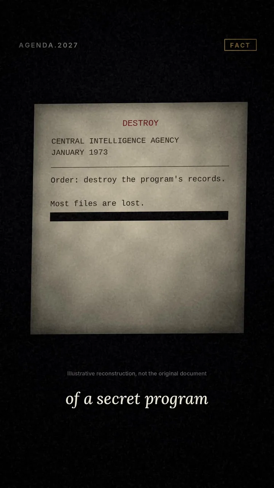

Sealed fileMKUltra: the 40 boxesWatch on @agenda2027.dailyThe CIA destroyed the MKUltra files. A whistleblower says 40 boxes still exist.
Watch it on @agenda2027.dailyIn 1973, the director of the CIA ordered every file of a secret program destroyed.
The program was MKUltra. Twenty years of mind control research, from 1953 to 1973.
Drugs, hypnosis, interrogation experiments. Some on people who never knew they were being tested.
The shredding failed. In 1977, around twenty thousand pages surfaced in a financial archive.
Then, in May 2026, a CIA officer testified under oath that the agency took back forty boxes of MKUltra and JFK files before they could be declassified.
Congress is now fighting to get them released.
Fifty years later, the files are still being hidden.
Sources named in the video
- U.S. Senate, "Project MKULTRA, the CIA's Program of Research in Behavioral Modification", joint hearing, 3 Aug 1977
- CIA Reading Room: Statement of DCI Stansfield Turner, 3 Aug 1977
- Washington Examiner, 13 May 2026: whistleblower James Erdman III says CIA seized JFK and MKUltra files
- Washington Examiner, 30 Jun 2026: Rep. Luna says CIA declassifying newly discovered MKUltra documents
What do you think is in the 40 boxes?
Answer on @agenda2027.daily